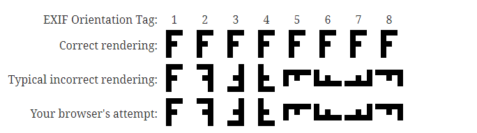

本文讲的图片上传，主要是针对上传头像的。大家都知道，上传头像一般都会分成以下 4 个步骤：
选择图片 -> 预览图片 -> 裁剪图片 -> 上传图片
接下来，就详细的介绍每个步骤具体实现。
选择图片
选择图片有什么好讲的呢？不就一个 input[type=file] ，然后点击就可以了吗？确实是这样的，但是，我们想要做得更加的友好一些，比如需要过滤掉非图片文件， 或只允许从摄像头拍照获取图片等，还是需要进行一些简单配置的。
下面就先来看看最简单的选择图片：
<input type="file" />这时候，点击这个 input , 在 iOS 手机的显示如下：
其中的 “浏览” 选项，可以查看到非图片类型的文件，这并不是我们想要的结果，毕竟我们只想要图片类型。可以通过 accept 属性来实现，如下：
<input type="file" accept="image/*">这样就可以过滤掉非图片类型了。但是图片的类型可能也太多了， 有些可能服务器不支持，所以，如果想保守一些，只允许 jpg 和 png 类型，可以写成这样：
<input type="file" accept="image/jpg, image/jpeg, image/png">或：
<input type="file" accept=".jpg, .jpeg, .png">OK, 过滤非图片的需求搞定了。但是有时候 ，产品还要求只能从摄像头采集图片，比如需要上传证件照，防止从网上随便找别人的证件上传，那 capture 属性就可以派上用场了:
<input type="file" accept="image/*" capture>这时候，就不能从文件系统中选择照片了，只能从摄像头采集。到了这一步，可能觉得很完美了，但是还有个问题，可能有些变态产品要求默认打开前置摄像头采集图片，比如就是想要你的自拍照片。 capture 默认调用的是后置摄像头。默认启用前置摄像头可以设置 capture="user" ，如下：
<input type="file" accept="image/*" capture="user">好啦，关于选择图片的就讲么这么多了，有个注意的地方是，可能有些配置在兼容性上会有一些问题，所以需要在不同的机型上测试一下看看效果。
下面再来谈谈预览图片的实现。
预览图片
在远古时代，前端并没有预览图片的方法。当时的做法时，用户选择图片之后，立刻把图片上传到服务器，然后服务器返回远程图片的 url 给前端显示。这种方法略显麻烦，而且会浪费用户的流量，因为用户可能还没有确定要上传，你却已经上传了。幸好，远古时代已经离我们远去了，现代浏览器已经实现了前端预览图片的功能。常用的方法有两个，分别是 URL.createObjectURL() 和 FileReader 。虽然他们目前均处在 w3c 规范中的 Working Draft 阶段, 但是大多数的现代浏览器都已经良好的支持了。 下面就介绍一下如何使用这两个方法。
1. 使用 URL.createObjectURL 预览
URL.createObjectURL() 静态方法会创建一个 DOMString，其中包含一个表示参数中给出的对象的 URL。这个 URL 的生命周期和创建它的窗口中的 document 绑定。这个新的URL 对象表示指定的 File 对象或 Blob 对象。用法用下：
objectURL = URL.createObjectURL(object);
其中， object 参数指 用于创建 URL 的 File 对象、Blob 对象或者 MediaSource 对象。
对于我们的 input[type=file] 而言， input.files[0] 可以获取到当前选中文件的 File 对象。示例代码如下：
<input id="inputFile" type="file" accept="image/*">
<img src="" id="previewImage" alt="图片预览">
<script>
const $ = document.getElementById.bind(document);
const $inputFile = $('inputFile');
const $previewImage = $('previewImage');
$inputFile.addEventListener('change', function() {
const file = this.files[0];
$previewImage.src = file ? URL.createObjectURL(file) : '';
}, this);
</script>具体用法可以参考 MDN上的 URL.createObjectURL()，
2. 使用 FileReader 预览
FileReader 对象允许Web应用程序异步读取存储在用户计算机上的文件（或原始数据缓冲区）的内容，使用 File 或 Blob 对象指定要读取的文件或数据。同理的，我们也可以通过 input.files[0] 获取到当前选中的图片的 File对象。
特别注意，FileReader 和 是异步读取文件或数据的！
下面是使用 FileReader 预览图片的示例：
<input id="inputFile" type="file" accept="image/*">
<img src="" id="previewImage" alt="图片预览">
<script>
const $ = document.getElementById.bind(document);
const $inputFile = $('inputFile');
const $previewImage = $('previewImage');
$inputFile.addEventListener('change', function() {
const file = this.files[0];
const reader = new FileReader();
reader.addEventListener('load', function() {
$previewImage.src = reader.result;
}, false);
if(file) {
reader.readAsDataURL(file);
}
}, false)
</script>会发现, FileReader 会相对复杂一些.
更多关于 FileReader 的用法 ，可以参考 MDN 文档 FileReader
两种方法的对比
我个人更加倾向于使用 URL.createObjectURL() 。主要原先它的 API 简洁，同步读取，并且他返回的是一个 URL ，比 FileReaer 返回的base64 更加精简。兼容性上，两者都差不多，都是在 WD 的阶段。性能上的对比, 在 chrome 上, 选择了一张 2M 的图片, URL.createObjectURL() 用时是 0 , 而 FileReader 用时 20ms 左右。 0 感觉不太合理，虽然这个方法立刻就会返回一个 URL ，但是我猜测实际上这个 URL 指定的内容还没有生成好，应该是异步生成的，然后才渲染出来的。所以并没有很好的办法来对比他们的性能。
如果想要学习更多关于图片预览，可以阅读以下两篇文章：
裁剪图片
关于图片的裁剪，很自然的会想到使用 canvas ，确实是要通过 canvas, 但是如果全部我们自己来实现，可能需要做比较多的工作，所以为了省力，我们可以站在巨人的肩膀上。比较优秀的图片裁剪库是 cropperjs , 该库可以对图片进行缩放、移动和旋转。
cropperjs 的详细配置这里就不展开了 ,需要的可以自己去看文档就好。下面我们就以这个库为基础，实现一个裁剪人脸的例子：
<input id="inputFile" type="file" accept="image/*">
<img class="preview-image" id="previewImage" src="" alt="">
<!-- cropper裁剪框 -->
<div class="cropper" id="cropper">
<div class="inner">
<div class="face-container">
<img class="cropper-image" id="cropperImage">
</div>
<div class="tips">请将面部区域置于人脸框架内</div>
<div class="toolbar">
<div class="btn" id="confirm">确认</div>
</div>
</div>
</div>
<link rel="stylesheet" href="https://cdnjs.cloudflare.com/ajax/libs/cropperjs/1.5.6/cropper.min.css">
<script src="https://cdnjs.cloudflare.com/ajax/libs/cropperjs/1.5.6/cropper.min.js"></script>
<style>
.preview-image,
.cropper-image {
max-width: 100%;
}
.cropper {
display: none;
position: absolute;
top: 0;
right: 0;
bottom: 0;
left: 0;
background: #ccc;
font-size: 0.27rem;
text-align: center;
}
.inner {
height: 100%;
display: flex;
flex-direction: column;
justify-content: center;
align-items: center;
}
.face-container {
position: relative;
width: 320px;
height: 320px;
margin: 50px auto;
}
.cropper-modal {
background: url('https://ok.166.net/gameyw-misc/opd/squash/20191028/152551-m37snfsyu1.png') center no-repeat;
background-size: 100% 100%;
opacity: 1;
}
.cropper-bg {
background: none;
}
.cropper-view-box {
opacity: 0;
}
.tips {
font-size: 16px;
}
.toolbar {
display: flex;
justify-content: center;
margin: 50px 0;
}
.btn {
width: 150px;
line-height: 40px;
font-size: 20px;
text-align: center;
color: #fff;
background: #007fff;
}
</style>
<script>
const $ = document.getElementById.bind(document);
const $cropper = $('cropper');
const $inputFile = $('inputFile');
const $previewImage = $('previewImage');
const $cropperImage = $('cropperImage');
const $confirmBtn = $('confirm')
let cropperInstance = null;
// 选择图片后，显示图片裁剪框
$inputFile.addEventListener('change', function() {
const file = this.files[0];
if(!file) return;
$cropperImage.src = URL.createObjectURL(file);
showCropper();
}, false);
// 点击确认按钮，将裁剪好的图片放到 img 标签显示。
$confirmBtn.addEventListener('click', function() {
const url = cropperInstance.getCroppedCanvas().toDataURL("image/jpeg", 1.0);
$cropper.style.display = 'none';
$previewImage.src = url;
}, false);
function showCropper() {
$cropper.style.display = 'block';
cropperInstance && cropperInstance.destroy();
cropperInstance = new Cropper($cropperImage, {
viewMode: 1,
aspectRatio: 1,
autoCropArea: 1,
dragMode: 'move',
guides: false,
highlight: false,
cropBoxMovable: false,
cropBoxResizable: false
});
}
</script>
效果图如下：
上传
前面的操作已经完成了图片上传前的准备，包括选择图片、预览图片、编辑图片等，那接下来就可以上传图片了。上面的例子中，使用了 cropperInstance.getCroppedCanvas() 方法来获取到对应的 canvas 对象 。有了 canvas 对象就好办了，因为 canvas.toBlob() 方法可以取得相应的 Blob 对象，然后，我们就可以把这个 Blob 对象添加到 FromData 进行无刷新的提交了。大概的代码如下：
function uploadFile() {
cropperInstance.getCroppedCanvas().toBlob(function(blob) {
const formData = new FormData();
formData.append('avatar', blob);
fetch('xxxx', {
method: 'POST',
body: formData
});
});
}这段代码并不能真正执行，因为我们还没有对应的后端服务器。如果想要尝试上传图片的朋友，可以参考一下这篇文章 写给新手前端的各种文件上传攻略，从小图片到大文件断点续传，由于篇幅原因，这里就不展开啦。
后记
关于图片上传的介绍，差不多不到些结束了。但是之前在 iPhone 和 小米 手机上，遇到一个奇怪的问题： 就是我使用前置摄像头自拍出来的照片，选择之后 ，会自逆时针旋转 90 度，比如像下图：
拍照的时候明明就是正着拍的，为什么预览就会变成横着了呢？当时第一次遇到这个问题的时候，也觉得好奇怪。后来查了一下，得知这是因为拍照时，相机都会记录拍照的角度信息，可能 iPhone 前置摄像头记录的角度信息和其他的有点不一样，而 iPhone 自己的相册在浏览照片时，自动纠正了角度 ，而浏览器却没有纠正，所以才会出现这个旋转。
为了解决这个问题，需要使用 EXIF 这个库来处理。
我刚刚试了一下，发现我的 iPhone 现在竟然不会有这个问题了，大概是半年前，当时在做一个需求时，自拍的图片会发生这种旋转，有可能是 iOS 系统升级后， 已经修复了这个问题。而现在身边又没有小米手机， 所以也不好复现。还好，当时我保存了一张会自动旋转的图片。大家可以到这里下载：
https://ok.166.net/gameyw-misc/opd/squash/20191028/170829-f5t38i0d9k.png
{kind=link}
这图片下载后，用电脑的图片查看器打开是正常的，但是，在浏览器中，选择这个图片后，使用 URL.createObjectURL() 或 FileReader 来预览就会发生旋转。甚至直接 img 标签引入也会逆时针旋转了 90 度，比如：
<img src="https://ok.166.net/gameyw-misc/opd/squash/20191028/170829-f5t38i0d9k.png">效果如下：
下面就以这张图片为例，介绍一下如何使用 EXIF 来检测图片角度。关于 EXIF 的详细用法大家可以到 github 的主页上查看 https://github.com/exif-js/exif-js
<img id="exifImage" src="https://ok.166.net/gameyw-misc/opd/squash/20191028/170829-f5t38i0d9k.png" alt="">
<script src="https://cdnjs.cloudflare.com/ajax/libs/exif-js/2.3.0/exif.js"></script>
<script>
const $exifImage = document.getElementById('exifImage');
$exifImage.onload = function() {
EXIF.getData($exifImage, function() {
let allMetaData = EXIF.getAllTags(this);
console.log(allMetaData.Orientation); // 6
});
};
</script>上面代码的输出 allMetaData.Orientation 的结果为 6 ， 那 6 到底是什么意思呢？ 可以参考这个篇文章 http://sylvana.net/jpegcrop/exif_orientation.html 里面有个表格:
如果这个表格看不太懂，再参考一下这篇文章 JPEG Orientation，里有个图:

可以看出，摄像头信息是逆时针旋转了 90 度。那要怎么纠正呢？就顺时针旋转 90 度抵消掉这个角度就好。
事实上， CropperJS 也会检测图片的 EXIF 信息，并且会自动纠正角度的，详情参考 https://github.com/fengyuanchen/cropperjs#checkorientation
这里也提到了，但只支持读取 jpg 图片的 EXIF 信息，而我们这张图片是 PNG 所以并不支持。
有个 CSS 属性叫做 image-orientation , 它有个值叫做 from-image , 就是使用图片的 EXIF 数据来旋转的。可惜，目前 chrome 不支持该属性。有兴趣的可以了解一下。